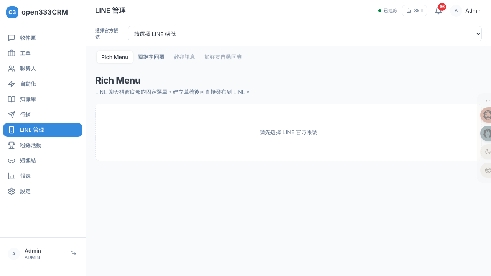
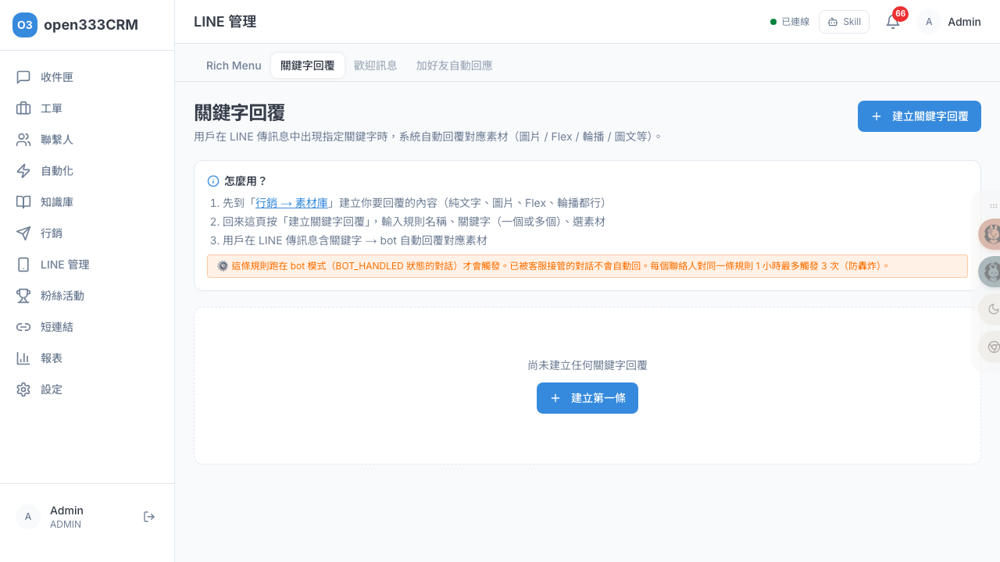
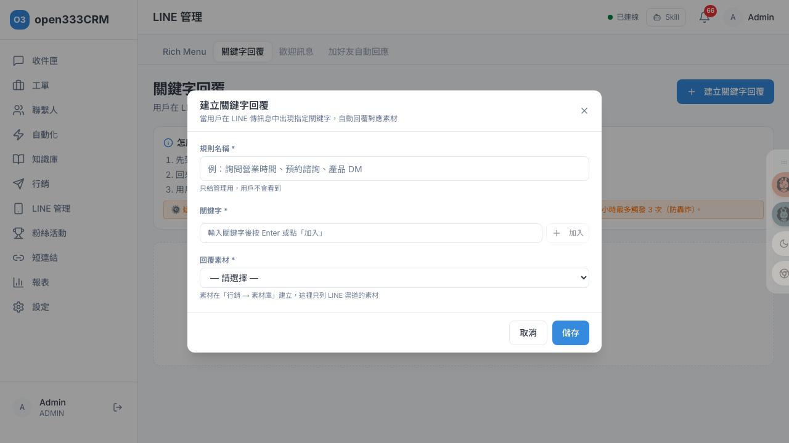
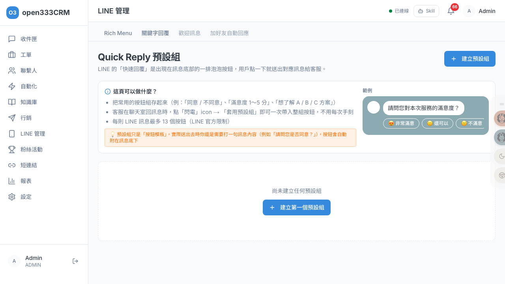
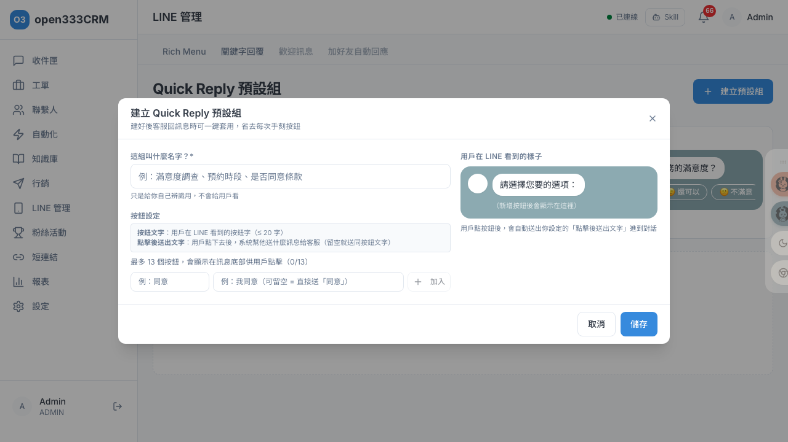

CHAPTER 07 · 行銷與活動
LINE 管理
管理 LINE 官方帳號的圖文選單、關鍵字自動回覆與快速回覆按鈕組，強化 LINE 上的客戶互動體驗。
1 功能總覽
LINE 管理提供三項 LINE 專屬功能：圖文選單（Rich Menu）、關鍵字回覆、Quick Reply 預設組。
操作前要先在頁面上方選擇要管理的 LINE 官方帳號（OA）——一個公司可以有多個 LINE OA。要注意的分別是：圖文選單是綁定單一 OA 的（每個 OA 各自管理），而關鍵字回覆與 Quick Reply 預設組是全公司共用、不分 OA。
ℹ️
若還沒有 LINE 官方帳號，會提示「請先到「設定 > 渠道」新增 LINE 渠道」（見「11 · 系統設定」）。頁面上的「歡迎訊息」「加好友自動回應」是即將推出的功能。
2 圖文選單 Rich Menu
圖文選單是 LINE 聊天視窗底部的固定選單。建立草稿後可直接發布到 LINE，用戶開啟對話就會看到。

| 狀態 | 意義 |
|---|---|
| 草稿 | 編輯中，尚未發布 |
| 已發布 | 已上架到 LINE，用戶看得到 |
| 發布失敗 | 發布過程出錯（例如背景圖抓不到、超過大小） |
3 建立圖文選單
選好 OA 後點「建立 Rich Menu」，依三步驟完成：先選版型 → 填基本資訊與上傳背景圖 → 設定每個區域的動作。
版型（10 種，格子大小固定不可改）
| 類型 | 尺寸 | 版型 |
|---|---|---|
| 大選單 | 2500 × 1686 | 2×2 四等分、上1+下2、上2+下1、上1+下3、上下2條、3×2 六等分 |
| 小選單 | 2500 × 843 | 3 等寬、左1+右2、左2+右1、全寬單格 |
選了版型後，格子大小就固定了——你只能改每個區域「點下去做什麼」，不能拖拉改格子大小。
基本欄位
| 欄位 | 規則 |
|---|---|
| 名稱 | 必填，上限 200 字，只給內部管理用（用戶看不到） |
| 底部按鈕文字 | 必填，上限 14 字（有即時計數），這是用戶在 LINE 底部看到的字（如「菜單」） |
| 預設展開選單 | 勾了用戶一開對話就自動展開此選單（新建預設勾選） |
| 背景圖 | 必填，建議 JPEG/PNG、≤ 1 MB |
每個區域的 5 種動作
| 動作 | 用途 |
|---|---|
| 回傳資料（postback） | 把資料傳回後端觸發自動化（用戶看不到資料本身） |
| 傳送訊息 | 等於幫用戶打了這句話送出 |
| 開啟網址 | 連到指定網頁（可另設電腦版網址） |
| 日期時間選擇 | 讓用戶選日期 / 時間 |
| 切換 Rich Menu | 切到另一個選單（目標選單需先發布並設 alias） |
編輯器右側有即時預覽，背景圖上會疊出熱區框與編號。完成點「儲存草稿」。
4 發布與取消發布
確認選單無誤後點「發布到 LINE」。這是最重要的操作，理解它才不會踩坑。
按「發布」後系統做了什麼
- 先跳確認框「確定發布到 LINE？發布後將無法直接編輯，需先取消發布。」
- 真的去抓你上傳的背景圖並驗證：抓不到、格式非 JPEG/PNG、或超過 1 MB 都會擋下並標「發布失敗」。
- 呼叫 LINE 建立選單、上傳背景圖；若勾了「預設展開」，會把它設為該 OA 的預設選單（並自動取消該 OA 原本的預設，因為 LINE 只能有一個預設）。
- 過程出錯會自動回滾（把剛建的清掉），狀態標「發布失敗」。
⚠️
已發布的選單不能直接編輯或刪除——卡片上的「編輯」「刪除」會變灰，hover 提示「已發布需先取消發布才能編輯」。要改就先「取消發布」（會從 LINE 移除、狀態回草稿），改完再發布。想保留原版做新版，可用「複製」產生副本。
5 關鍵字回覆
當用戶在 LINE 傳的訊息含指定關鍵字，系統自動回覆對應素材（圖片 / Flex / 輪播 / 圖文都行）。

⚠️
關鍵字回覆有三個關鍵限制：①只在 Bot 模式（Bot 處理中的對話）觸發，已被客服接管的對話不會自動回。②每位聯絡人對同一條規則每小時最多觸發 3 次（防轟炸）。③必須在渠道 Bot 設定裡選了「僅關鍵字」或「關鍵字+LLM」模式才會跑（見「11 · 設定」）。
6 建立關鍵字規則
點「建立關鍵字回覆」開啟對話框設定。

| 欄位 | 必填 | 說明 |
|---|---|---|
| 規則名稱 | ✓ | 上限 200 字，只給管理用、用戶看不到（例：詢問營業時間） |
| 關鍵字 | ✓ | 輸入後按 Enter 或「加入」變標籤；比對是不分大小寫、用「包含」判斷；多於 1 個時可選「任一命中」或「全部命中」 |
| 回覆素材 | ✓ | 下拉只列 LINE 啟用中的素材（來自素材庫）；含變數會警告「會以預設值送出」；素材被刪會顯示紅字提示 |
STEP 1
先備素材
在「行銷 → 素材庫」建好要回覆的內容
STEP 2
建關鍵字規則
輸入規則名稱、關鍵字、選素材
STEP 3
生效
用戶傳含關鍵字訊息 → Bot 自動回
7 Quick Reply 預設組
LINE 的快速回覆是訊息底部一排泡泡按鈕，用戶點一下就送出對應訊息給客服。此頁管理「可重用按鈕組」，客服在收件匣回訊息時，點「閃電」圖示 →「套用預設組」就能一鍵帶入整組，不用每次手刻。

點「建立預設組」開啟對話框，填名稱並設定按鈕：

| 欄位 | 規則 |
|---|---|
| 名稱 | 必填，上限 100 字，只給自己辨識（例：滿意度調查） |
| 按鈕文字 | 用戶在 LINE 看到的字，必填、≤ 20 字 |
| 點擊後送出文字 | 用戶點下去系統幫他送什麼，選填、≤ 300 字，留空 = 送出跟按鈕文字一樣的內容 |
每組最多 13 個按鈕（LINE 官方限制）。
ℹ️
預設組只是「按鈕模板」——實際送出時客服仍要打一句訊息內容（例如「請問您是否同意？」），按鈕會自動附在訊息底下。用戶點按鈕後，系統會把「點擊後送出文字」當成用戶的回覆送進對話。